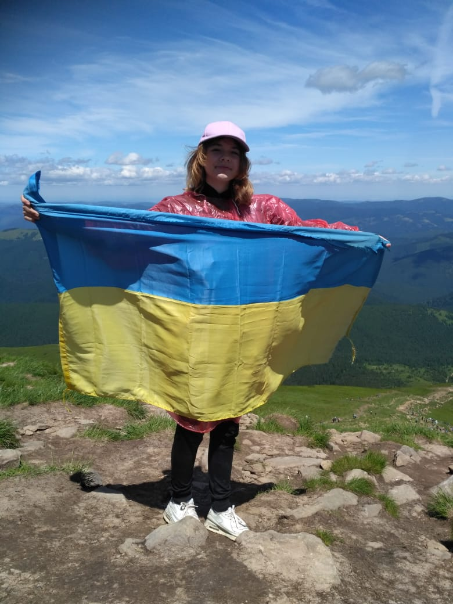

Ukraine is famous for its beautiful mountains. The Carpathian Mountains in Ukraine boast breathtaking landscapes and rich biodiversity. These scenic mountains cover a significant part of western Ukraine, providing a haven for diverse plant and animal life. The region is dotted with quaint villages, where traditional culture and customs are preserved. In 2019, I was able to reach the top of the highest mountain - Hoverla. It was a beautiful, but really hard journey.